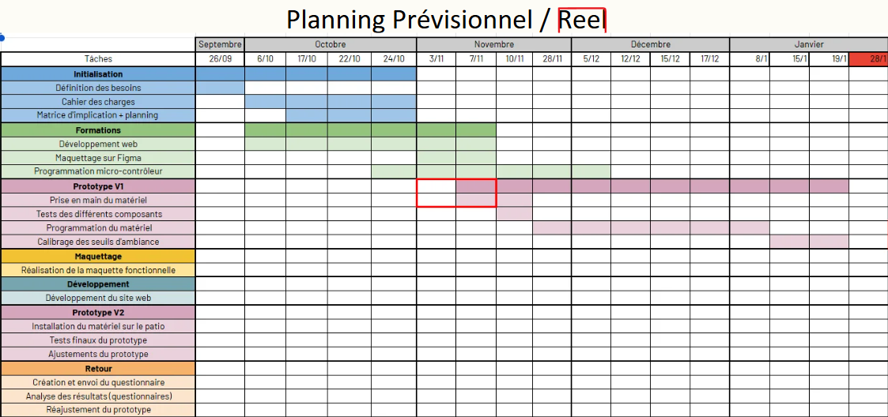
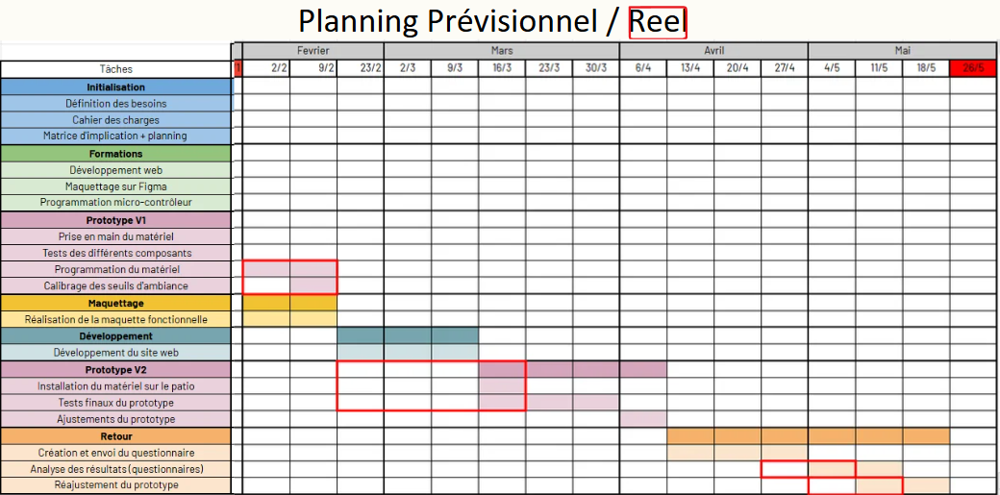
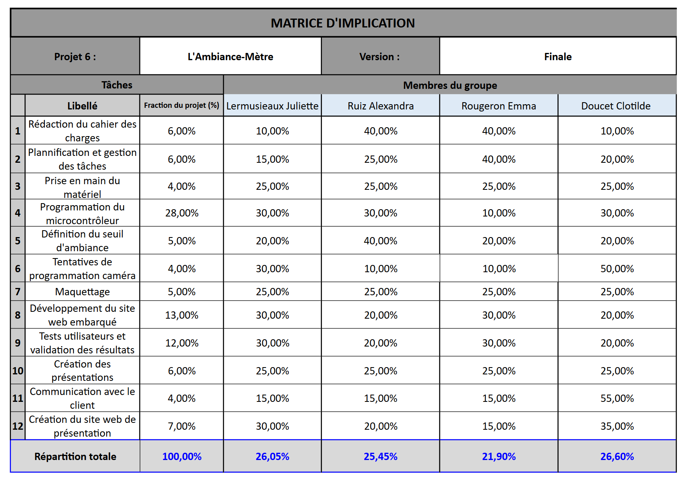

Présentation de l'équipe
Nous sommes la promotion 2028 de l'ENSC Bordeaux INP. Ce projet a été réalisé en équipe autour de la programmation, des capteurs, du traitement du signal et du développement web.
Clotilde Doucet
Voir le CVJuliette Lermusieaux
Voir le CVOrganisation du projet
Planification
Le projet a été organisé à l’aide d’un planning prévisionnel puis ajusté selon l’avancement réel du prototype.
Répartition
Les tâches ont été réparties entre les membres selon les besoins techniques et les compétences mobilisées.
Adaptation
Plusieurs ajustements ont été réalisés au cours du projet afin de gérer les difficultés techniques rencontrées.
Planning du projet
Le planning permet de suivre les différentes étapes du projet depuis les premiers tests jusqu’à la finalisation du prototype.


Matrice d'implication
Cette matrice présente la répartition des tâches ainsi que le niveau d’implication de chaque membre dans les différentes parties du projet.
